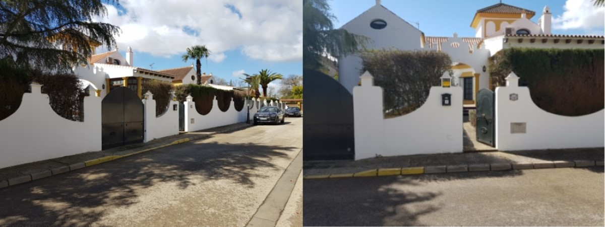
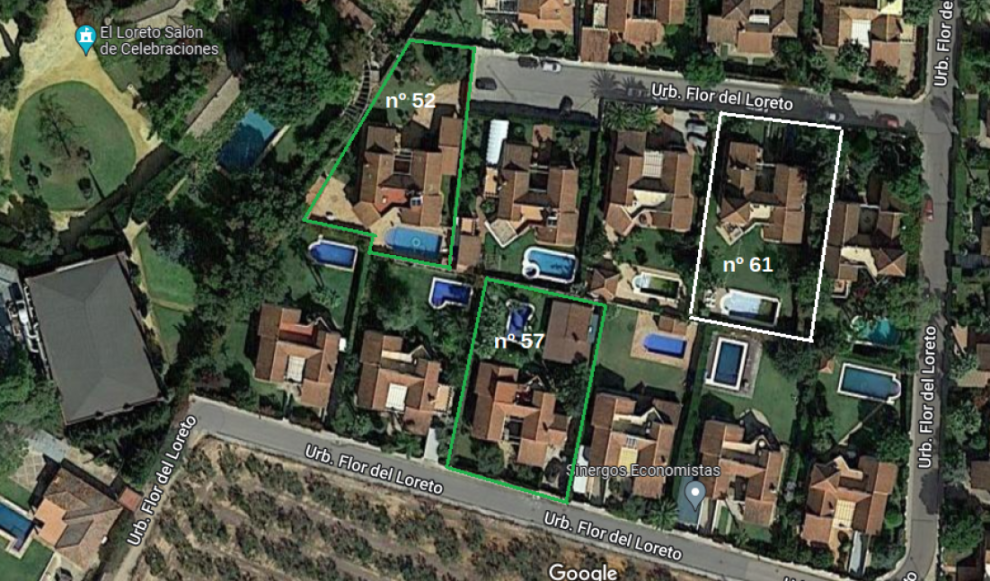

CASA EN VENTA DE CESIÓN DE REMATE EN ESPARTINAS,SEVILLA CON JARDÍN Y PISCINA
Nota: Las palabras o frases de color azul subrayadas llevan a información adicional al clicar en ellas.
Vista Exterior

Vista aérea de la zona

Una vez cerrada la subasta judicial los ejecutantes han solicitado la adjudicación con cesión de remate en un plazo de 40 días. En caso de aceptar el juzgado su solicitud, se tendrá hasta el 8 de octubre para presentar un cesionario y pagar el precio de cesión.
Tras haberse realizado y cerrado las visitas a la propiedad los días 8 y 9 de julio, resumimos y actualizamos seguidamente las informaciones más importantes a modo de recordatorio. Siempre estamos a su disposición en el 644190074
Información básica.
- La zona Espartinas-El Aljarafe
- Los precios en la zona.
Ambos inmuebles pueden ser visitados concertando cita en los teléfonos indicados.
- IBI (Impuesto sobre Bienes Inmuebles): 1.400 Euros/año
- Valor de Referencia Catastral - valor de mercado calculado a partir de precios de compraventas de inmuebles, según información facilitada por notarios y registradores - es de 433.000 Euros.
- La vivienda se encuentra desocupada y está dotada de una alarma anti intrusos Prosegur alimentada por batería.
Las cerraduras se han cambiado y las llaves están disponibles.
-
Información sobre la vivienda
- Situación de cargas
- Impuesto sobre Bienes Inmuebles (IBI)
- El proceso de cesión de remate
- La solicitud de adjudicación con cesión de remate ha sido presentada al juzgado el 8-7-2002 solicitando un plazo de 40 días hábiles para presentar al cesionario. En caso de ser aceptado implicaría que el plazo expirase el 6 de octubre de 2022, pero depende de la decisión del juzgado.
- La compra requiere el pago al contado del precio total y, por tanto, disponer de los fondos necesarios, tomando en cuenta los impuestos[1] y tasas a pagar .
- Previamente, será preciso depositar una señal de 12.500 Euros que dará el derecho a la reserva de la cesión de remate, al igual que se hace en la venta de una vivienda.
- Plazos orientativos:
- Ofertas: periodo comprendido entre el 3 de julio y el 17 de julio de 2022.
- Firma del contrato de reserva y pago de depósito: fecha comprendida entre 20 y 24 de julio de 2022.
- Pago del resto del precio de cesión: Estimamos que el pago deberá hacerse antes del 13 de septiembre u 8 de octubre, dependiendo de lo que decida el juzgado sobre la solicitud de la adjudicación con cesión de remate.